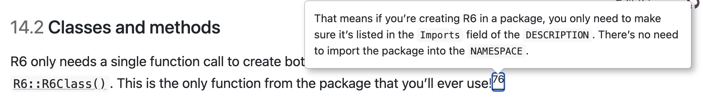

The R6 Object model
2026-04-16
An Example
self refers to the object itself
Constructor and Immutability
For free, function new
<RectangleR6>
Public:
area: function ()
clone: function (deep = FALSE)
height: 0
width: 0clone function - used for copying, but by default objects are immutable.
initialize
replaces the default behavior of new, i.e. we can check for validity:
Adding Methods
This needs care!
- Only newly created objects have the functionality:
- Convention: if the function is implemented for the side effect, return
selfinvisibly. This allows chaining.
Chaining
R6 classes allow chaining
same as
R6 reference class
R6Class objects have …
Class 'R6ClassGenerator' <RectangleR6> object generator
Public:
width: 0
height: 0
initialize: function (width, height)
area: function ()
clone: function (deep = FALSE)
expand_by: function (w = 0, h = 0)
Parent env: <environment: R_GlobalEnv>
Locked objects: TRUE
Locked class: FALSE
Portable: TRUE
- attr(*, "name")= chr "RectangleR6_generator"Your Turn
Let’s think about this quote for a moment:

Which functions did we use so far?
newandsetlook like functions, but …are actually methods of an
R6Classobject
Your Turn
… What does that mean for the built-in help in R?
your turn modification: find documentation for the
setfunction
Your Turn
R6 class online: https://r6.r-lib.org/
Locate the function set and read through the code
Your Turn
Speed check! microbench the R6 class Rectangle and compare to the S3 and S4 implementations
source("../../code/2026-04-14-code.R")
widths <- abs(rnorm(1000))
heights <- abs(rnorm(1000))
make_R6_area <- function(widths, heights) {
result <- numeric(length(widths))
for (i in 1:length(widths)) {
rectangle <- RectangleR6$new(widths[i],
heights[i])
result[i] <- rectangle$area()
}
result
}
bench <- microbenchmark::microbenchmark(
make_S3_area(widths, heights),
make_S4_area(widths, heights),
make_R6_area(widths, heights))Comparison Results
Unit: milliseconds
expr min lq mean median
make_S3_area(widths, heights) 6.266484 7.175363 7.920895 7.373217
make_S4_area(widths, heights) 75.315141 79.574138 82.991791 81.980109
make_R6_area(widths, heights) 42.633768 46.403792 49.569256 47.973679
uq max neval cld
7.950373 16.45371 100 a
84.295891 113.21238 100 b
49.717030 142.27025 100 cActive fields
Help us prevent misuse like this:
Idea: make height and width private and use active fields to access them
a new class …
RectangleR6 <- R6Class("RectangleR6",
private = list(
.width = 0,
.height = 0
),
public = list(initialize = function(width, height) {
stopifnot(width >= 0, height >= 0)
private$.width = width #<<
private$.height = height #<<
},
area = function() {
return(private$.width * private$.height)
}),
active = list(
width = function(value) {
if (missing(value)) {
private$.width
} else {
if (value < 0)
stop("`$width` can't be negative", call. = FALSE)
private$.width <- value
}
},
height = function() {
if (missing(value)) {
private$.height
} else {
if (value < 0)
stop("`$height` can't be negative", call. = FALSE)
private$.height <- value
}
}
)
)Active fields …
look like fields to the outside
are implemented using active bindings; their values are re-computed every time they are accessed